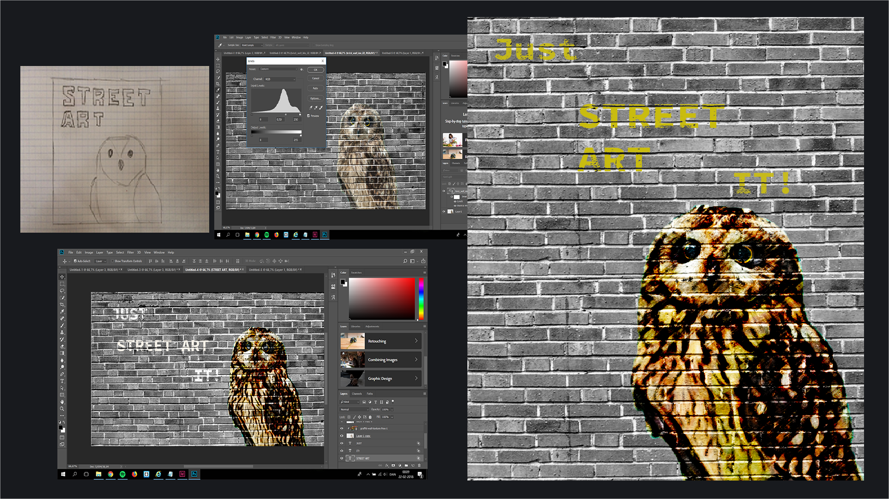

Vores første omfattende projekt på Københavns Erhvervsakademi var individuelt at lave en hjemmeside om et tilvalgt stilart. Mit tilvalgte stilart blev Street Art, der er en udtryksform igennem kunstneriske, politiske eller samfundskritiske kunstværker, der bruges som talerør til dem, der normalt ikke har et forum.

Processen var opdelt i en design content stilartside ved brug af Adobe Indesign, en videreudbygget stilartside med html kode ved brug af Brackets og til sidst en responsiv stilartside ved hjælp af css, der introducerede os til Flexbox. Vi arbejdede med ide-generering, billedebehandling i Adobe Photoshop, design- og kommunikationsteori, skitsering og programmering.
Vi begyndte stille og roligt med at forstå strukturen af kodning igennem HTML. Vi lærte at arbejde fra et wireframe til Html hvilket gjorde det nemmere at følge en struktur og undgå fejl. Vi arbejdede med basal markup, Hyperlinks, Html kommentarer, semantisk mark up og marking up indholdet i form af overskrifter og afsnit. Vi blev også introduseret til FTP (File Transfer Protocol) og SFTP (Secure File Transfer Protocol) til at overføre filer fra egen computer til egen server.
Til vores endelige opgave i dette tema skulle vi lave et responsivt stilartsite stylet med css og med brug af flex-box, hvor vi samtidig havde arbejdet med farveteori, Gestaltlovene samt komposition. Vi skulle til vores forside havde et splash billede i forskellige formater, der illustrerede vores stilart, Street-Art. Jeg begyndte med at skitsere forskellige ideer og photoshop til videreudvikling af ideen.
Til vores endelige opgave i dette tema skulle vi lave et responsivt stilartsite stylet med css og med brug af flex-box, hvor vi samtidig havde arbejdet med farveteori, Gestaltlovene samt komposition. Vi skulle til vores forside havde et splash billede i forskellige formater, der illustrerede vores stilart, Street-Art. Jeg begyndte med at skitsere forskellige ideer og photoshop til videreudvikling af ideen.